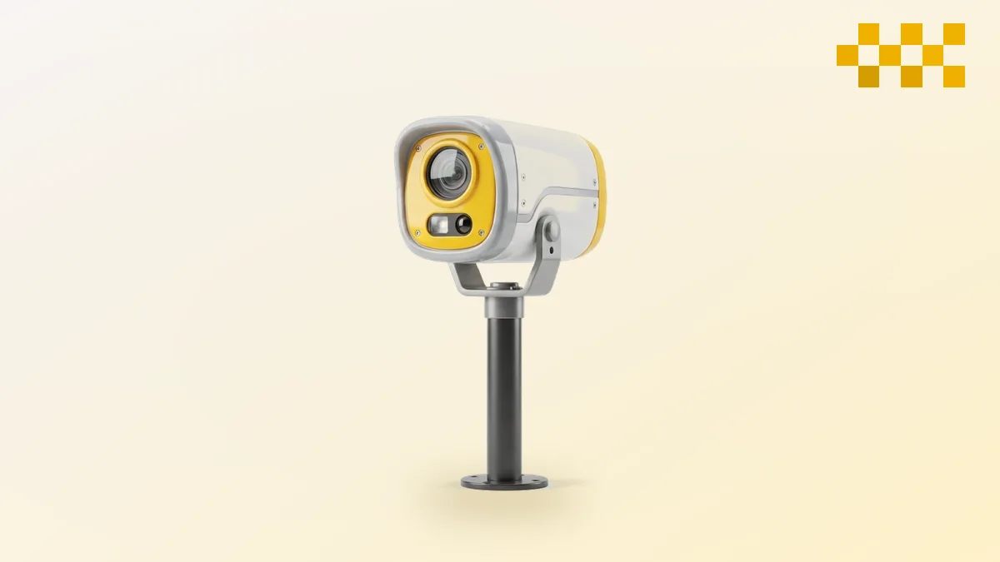
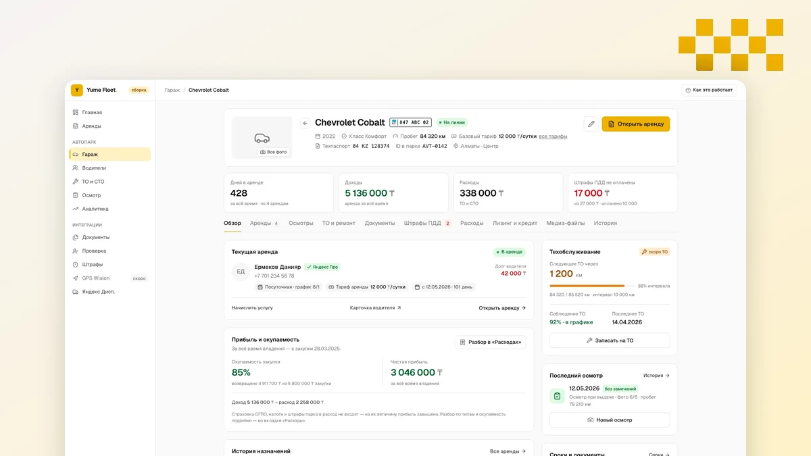
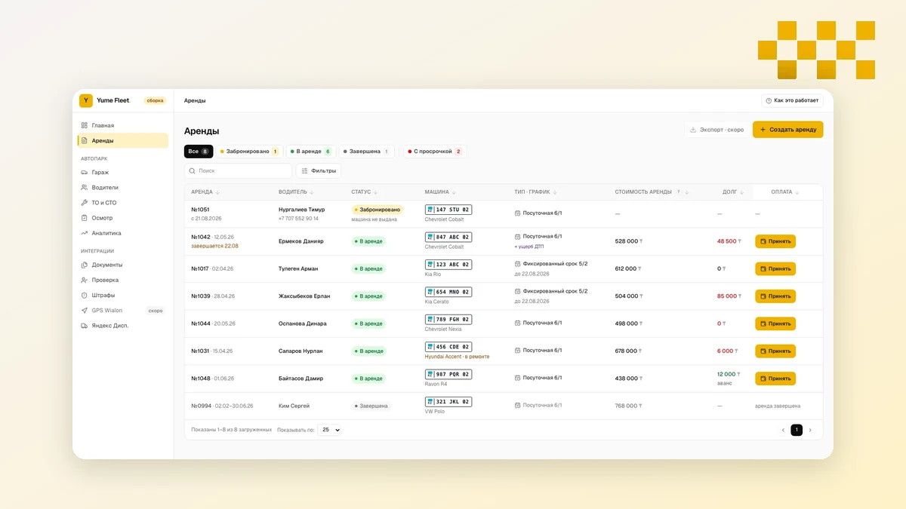

Электр таксиінің алғашқы қысы: Green SM Алматыға не әкелді
23 маусымда Алматыда вьетнамдық Green SM электр таксиі сервисі іске қосылды. Екі күннен кейін жүргізушілер кеңсеге наразылықпен келді. Іске қосу туралы не белгілі, қыстан не күтуге болады және қазақстандық жолдарға тағы не келе жатыр: жүргізушісіз такси мен аэротакси.
Оқу
Айыппұлдар 2026: 1 қаңтардан бері не қымбаттады және нені жойғысы келеді
Қаңтардан бері ЖҚЕ айыппұлдары жаңа АЕК салдарынан 10%-ға өсті, ал үкімет қайталанған бұзушылықтар үшін айыппұлды еселеп арттыруды және жүйелі бұзушыларға берілетін жеңілдікті жоюды талқылап жатыр. Таксист үшін айыппұл енді тек ақшаға ғана емес, жұмысқа да әсер етуі мүмкін.
ОқуҚазан 2026
3 материал
Жүріс бойынша ТҚ және тексерулер: көлікті бос тұру мен даудан қалай сақтау керек
Майды есіне түскенде ауыстырады, ал сызатты қайтарғаннан кейін тауып, оның кімдікі екенін талқылайды. Yume Fleet-те ТҚ жүріс бойынша ескертеді, тексерулер беру мен қайтару кезінде өтеді, ал жөндеу тарихы көліктің өтелетінін көрсетеді.
Оқу
Таксопарктің дебиторлық қарызы: жүргізушілердің қарызын күнде қалай көруге болады
Жүргізушілердің қарызы Excel-де, хат алмасуда және менеджердің есінде жүреді, ал оны айына бір рет салыстырады. Yume Fleet-те жалдау өзі есептеледі, қарыз бен мерзімі өткен күндер әр жалдау бойынша көрінеді, ал жүргізуші дәл сол сандарды сілтемеден көреді.
Оқу70 мың көлік тапсырыссыз қалды: оң рульді көліктерге не болады
Шамамен 70 мың оң рульді көлік агрегаторлардан қазірдің өзінде ажыратылды. 22 қыркүйекте көлік министрі ІІМ осындай көліктерді әрі қарай не істеу туралы заң дайындап жатқанын хабарлады. Бұл жүргізушілерге, парктерге және нарыққа нені білдіреді.
ОқуҚыркүйек 2026
4 материалТаксиге кімді алмайды: премьер 22 қыркүйекте не тапсырды
Үкімет отырысында премьер құқығынан айырылған және көп бұзушылық жинаған жүргізушілерді таксиге жібермеуді талап етті. Нақты не тапсырылғанын, бұл қайдан шыққанын және жүргізушілерді іріктеуді қалай өзгертуі мүмкін екенін айтамыз.
Оқу
Жүргізушімен шарт eGov және SMS арқылы: кездеспей қол қою
Жүргізуші көлікті бүгін алуға дайын, бірақ шарт қағазда, сондықтан беру ертеңге шегеріледі. Yume Fleet-те шарт, акт және жол парағы телефоннан eGov арқылы немесе SMS-пен қол қойылып, бірден жалдау картасына түседі.
ОқуКөлік енді тасымалдаушыға тіркелді: хабарламаның жаңа нысаны нені өзгертті
2026 жылғы мамырдан бастап такси хабарламасында әр автомобильдің маркасын, нөмірін және шыққан жылын көрсету керек. Тасымалдаушы кім екенін, билік көлікті неге оған байлағанын және парк иесі мен жүргізуші нені тексеруі керегін түсіндіреміз.
ОқуТаксиші мен таксопарктің салықтары: 2026 жылғы 1 қаңтардан бастап жаңа Кодекс нені өзгертті
1 қаңтардан бастап жаңа Салық кодексі қолданылады. Жүргізушілер өзін-өзі жұмыспен қамтығандарға айналды, платформалар әр сапардан 4% ұстайды, ал парктер ҚҚС оларды жойып жібермей ме деп таласты. Шын мәнінде не өзгергенін және 2027 жылы не күтіп тұрғанын айтамыз.
ОқуЕштеңе табылмады. Басқа сөзбен іздеп көріңіз.